Fichas de Geografía – 5.º de primaria
40 recursos de Geografía para 5.º de primaria, listos para imprimir: Lago salado, Río Elba, Capital Europea de la Cultura, Río Bravo y más. Cada ficha muestra el nivel, el número de páginas y una vista previa, y enlaza directamente al producto en eduki.
40 recursos
Lago salado – Ficha de comprensión lectora primaria: texto con huecos y sopa de letras
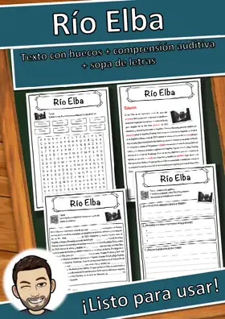
Río Elba – Ficha: texto con huecos, comprensión auditiva y sopa de letras
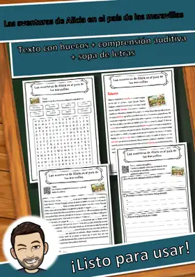
Las aventuras de Alicia en el país de las maravillas – Ficha: texto con huecos, comprensión auditiva y sopa de letras
Capital Europea de la Cultura – Ficha: texto con huecos, comprensión auditiva y sopa de letras
Río Bravo – Ficha: texto con huecos, comprensión auditiva y sopa de letras
Pueblos germánicos – Ficha: texto con huecos, comprensión auditiva y sopa de letras
Océano Atlántico – Ficha: texto con huecos, comprensión auditiva y sopa de letras
Montañas de arenisca del Elba – Ficha: texto con huecos, comprensión auditiva y sopa de letras
Monstruo del lago Ness – Ficha: texto con huecos, comprensión auditiva y sopa de letras
Lago de Constanza – Ficha: texto con huecos, comprensión auditiva y sopa de letras
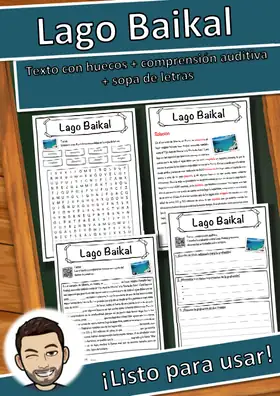
Lago Baikal – Ficha: texto con huecos, comprensión auditiva y sopa de letras
La isla del tesoro – Ficha: texto con huecos, comprensión auditiva y sopa de letras
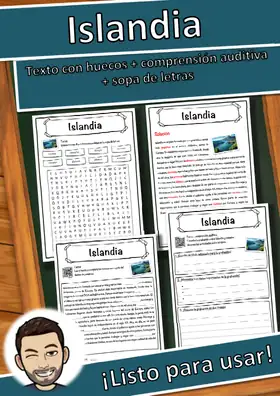
Islandia – Ficha: texto con huecos, comprensión auditiva y sopa de letras
Lago de Garda – Ficha: texto con huecos, comprensión auditiva y sopa de letras
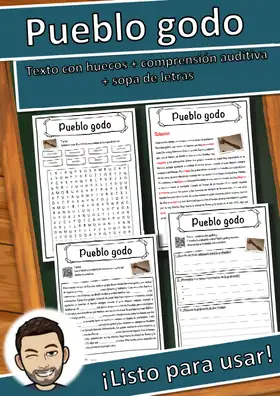
Pueblo godo – Ficha: texto con huecos, comprensión auditiva y sopa de letras
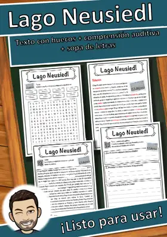
Lago Neusiedl – Ficha: texto con huecos, comprensión auditiva y sopa de letras
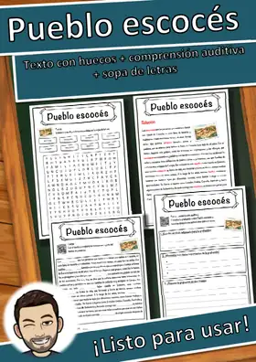
Pueblo escocés – Ficha: texto con huecos, comprensión auditiva y sopa de letras
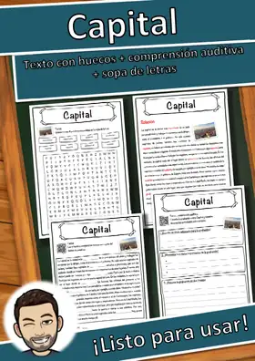
Capital – Ficha: texto con huecos, comprensión auditiva y sopa de letras
Pueblo maya – Ficha: texto con huecos, comprensión auditiva y sopa de letras
Océano Índico – Ficha: texto con huecos, comprensión auditiva y sopa de letras
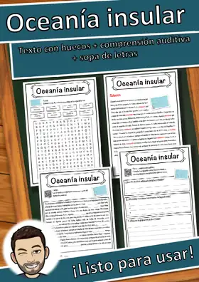
Oceanía insular – Ficha: texto con huecos, comprensión auditiva y sopa de letras
Océano Pacífico – Ficha: texto con huecos, comprensión auditiva y sopa de letras
Río de Janeiro – Ficha: texto con huecos, comprensión auditiva y sopa de letras
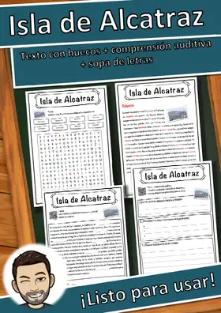
Isla de Alcatraz – Ficha: texto con huecos, comprensión auditiva y sopa de letras
Lago Müritz – Ficha: texto con huecos, comprensión auditiva y sopa de letras
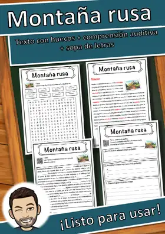
Montaña rusa – Ficha: texto con huecos, comprensión auditiva y sopa de letras
Río – Ficha: texto con huecos, comprensión auditiva y sopa de letras
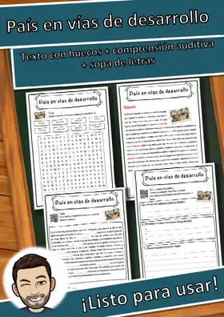
País en vías de desarrollo – Ficha: texto con huecos, comprensión auditiva y sopa de letras
Río Congo – Ficha: texto con huecos, comprensión auditiva y sopa de letras
Países Bajos – Ficha: texto con huecos, comprensión auditiva y sopa de letras
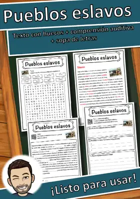
Pueblos eslavos – Ficha: texto con huecos, comprensión auditiva y sopa de letras
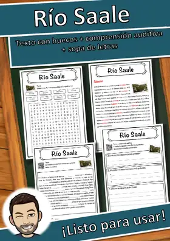
Río Saale – Ficha: texto con huecos, comprensión auditiva y sopa de letras
Lago de los Cuatro Cantones – Ficha: texto con huecos, comprensión auditiva y sopa de letras
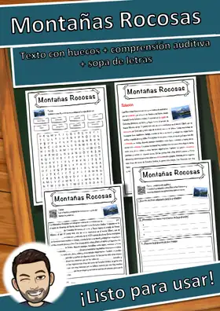
Montañas Rocosas – Ficha: texto con huecos, comprensión auditiva y sopa de letras
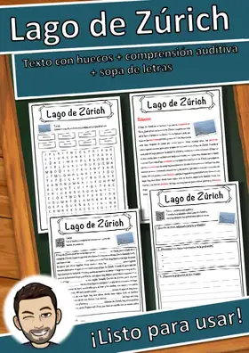
Lago de Zúrich – Ficha: texto con huecos, comprensión auditiva y sopa de letras
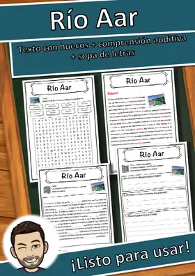
Río Aar – Ficha: texto con huecos, comprensión auditiva y sopa de letras
Ciudad de México – Ficha: texto con huecos, comprensión auditiva y sopa de letras
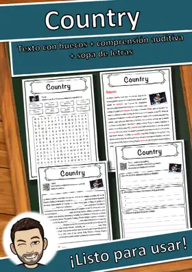
Country – Ficha: texto con huecos, comprensión auditiva y sopa de letras
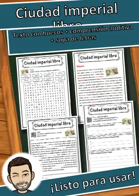
Ciudad imperial libre – Ficha: texto con huecos, comprensión auditiva y sopa de letras
Artesanos de la Edad Media: búsqueda del tesoro de lectura 6.º–7.º Primaria
Artesanos de la Edad Media: búsqueda del tesoro de lectura 6.º–7.º Primaria
No se encontraron recursos. Prueba con otra palabra o con otro filtro.